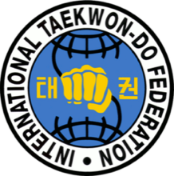

Inicio › Filosofía
Filosofía y principios
Los 5 principios y el juramento son de lo más preguntado en cualquier examen. Conviene poder recitarlos en orden y explicar cada uno con una frase propia.
Los 5 principios (tenets)
Son la base moral del Taekwon-Do. El General Choi los formuló para que el arte no fuera solo técnica de combate, sino formación de la persona.
Cortesía · Ye Ui
Tratar a los demás como a uno le gustaría que lo traten: con respeto y educación. Se manifiesta en el saludo, en el trato al instructor y a los compañeros.
Integridad · Yom Chi
La capacidad de ser responsable de los actos propios y de distinguir lo correcto de lo incorrecto. No es solo honestidad con otros: es no engañarse a uno mismo.
Perseverancia · In Nae
La capacidad de volver al principio, tener paciencia y confianza, y saber que con suficiente intención y preparación nada es imposible: ningún obstáculo es demasiado grande.
Autocontrol · Guk Gi
Canaliza la agresividad y nos enseña a encauzar esa energía de manera positiva. Es lo que hace que un practicante con capacidad de dañar elija no hacerlo.
Espíritu indómito · Baekjul Boolgool
Tener el valor de defender aquello en lo que se cree, sin importar las circunstancias ni quién esté enfrente.
El juramento del Taekwon-Do
Son 5 puntos, y todos empiezan en primera persona del futuro. No hay que confundirlos con los principios: los principios son valores, el juramento es un compromiso que el practicante asume.
- Observaré los principios del Taekwon-Do.
- Respetaré al instructor y a los superiores.
- Nunca haré mal uso del Taekwon-Do.
- Seré un campeón de la libertad y la justicia.
- Ayudaré a construir un mundo más pacífico.
Los símbolos
El dobok (el uniforme)
- Representa la vestimenta típica coreana.
- El dibujo del árbol en la espalda y los ribetes son el símbolo de la familia real.
El logo de la ITF

- Representa al mundo, con los polos abiertos: la apertura del Taekwon-Do a todo el planeta.
- Los colores representan a los cinturones y a los continentes.
- Está simbolizado con un puño.
El escudo de nuestra escuela es otro símbolo distinto, con su propio significado: ver el escudo de Chul Hak San →